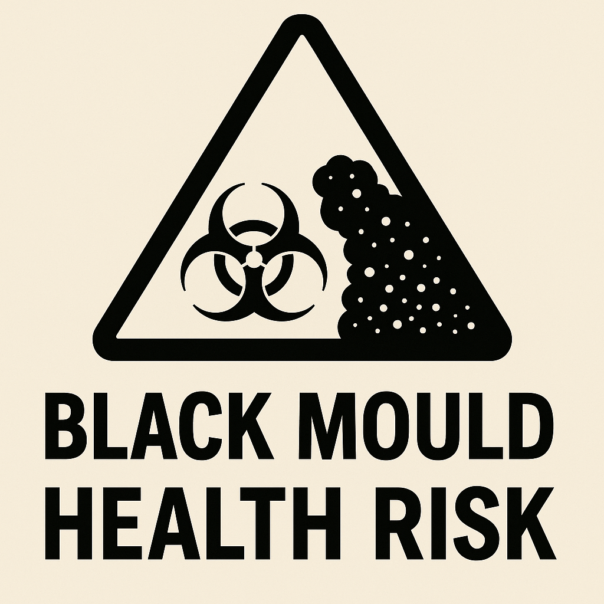

Any type of mould can affect people who have an allergy to mould. Black mould is no different from other types when it comes to its potential impact on occupants of a property.

Exposure to black mould can cause irritation to anyone
Does black mould make everyone sick?
Exposure to black mould can cause irritation to anyone; however, the following people are likely to be more affected by exposure to black mould:
People with allergies
People with respiratory conditions
People with compromised immune systems
Elderly people, children, and babies
People frequently exposed to black mould due to the nature of their work (for example, farmers working in mouldy sheds — “Farmer’s Lung”)
People living in damp properties with insufficient ventilation
Please note that everyone is different, and the type and severity of health issues (if any) caused by exposure to black mould depend on the individual and the extent of the exposure.
How many people get sick from black mould?
It's not common for healthy adults to be hospitalised from exposure to black mould however, approximately 26,000 babies and children are hospitalised in 2024 from a potential link to black mould expsoure.
Black mould linked to thousands of baby hospital admissions
Over 26,000 young children were admitted to hospital last year with lung conditions potentially linked to mould and damp, BBC Panorama revealed on Monday (10 February).
Panorama spoke with a mother whose son, Aziyah, began to develop health issues and was later diagnosed with asthma as a result of the black mould in their Brighton home.
Read the full article here
Can exposure to black mould be fatal?
Yes — however, incidents of serious illness or death from exposure to black mould are fortunately extremely rare. Estimates suggest that in the UK, around 1,200 to 1,250 deaths per year are linked to black mould exposure. These deaths are often due to respiratory illnesses exacerbated by damp conditions and mould exposure.
Common symptoms of exposure to black mould
Sneezing, coughing, a runny or blocked nose, and watering eyes. Black mould may also trigger asthma attacks, wheezing, and breathlessness.
How do I know if I have a black mould allergy?
A health professional can perform tests to diagnose a mould allergy.
How are mould allergies treated?
Mould allergies can't be eliminated, but medication can relieve the symptoms. The first step is to avoid exposure to black mould — get out of the mouldy environment and avoid continued exposure.
Do I need to detox if I've been exposed to black mould?
There’s no proof that exposure to black mould toxins causes disease in people, so there is no need to detox after exposure.